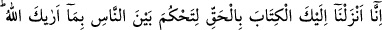
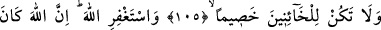
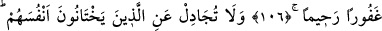
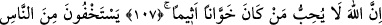
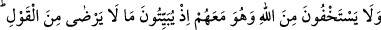
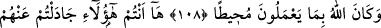
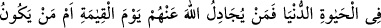
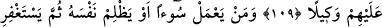
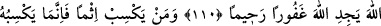
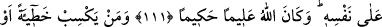
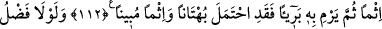
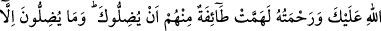
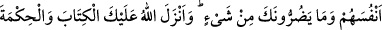
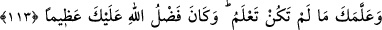
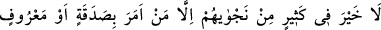
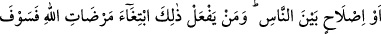
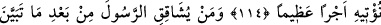
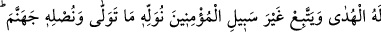
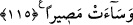
MÜ’MİNLERİN YOLUNDAN
SAPMAK
105- Allah’ın sana gösterdiği şekilde insanlar arasında hükmedesin diye sana
Kitâb’ı hak ile indirdik; hâinlerden taraf olma!
106- Allah’tan mağfiret dile. Şüphesiz Allah çok bağışlayan esirgeyendir.
107- Kendilerine hıyânet edenleri savunma; çünkü Allah dâimâ hâinlik yapıp
günah işleyenleri sevmez.
108- İnsanlardan gizlenirler de Allah’tan gizlenmezler. Halbuki geceleyin O’nun
razı olmadığı sözü düzüp kurarken O, onlarla berâber idi. Allah onların yaptıklarını
kuşatıcıdır (O’nun ilminden hiçbir şeyi gizleyemezler).